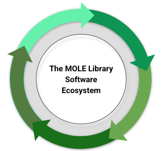
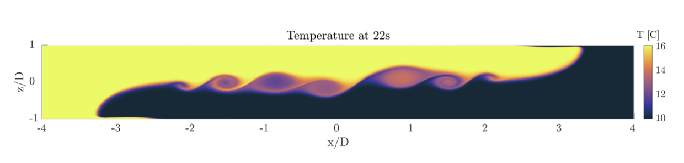

First MOLE Library Users’ Group (MUG) meeting
April 30, 2026 from 10 AM to 12:00 PM. U.S. Pacific Time.
Bioscience Center Auditorium, San Diego State University, California
|
 |
 |

|
The MOLE international community brings together developers of partial differential
equation (PDE) solvers, researchers of mimetic methods, software engineers,
developers of high-end computational applications, and external library reviewers.
Furthermore, the MOLE Open Source Ecosystem (OSE) organization hosts the sustainable
development of the MOLE library; managing its integration with other HPC numerical
libraries, its portability and interoperability to different computational platforms
and programming languages, and supporting the development of high-end computational
applications.
The goal of this meeting is to foster collaboration among all MOLE users and developers, share the latest MOLE updates with the broader community, deepen engagement, and gather feedback to guide future development directions for the MOLE OSE. The meeting will cover a brief introduction to MOLE, library updates, software engineering governing and onboarding documents, reports from MOLE’s governing circles, address new community requests and feedback, present a report from external peer-reviewers, and present MOLE’s strategic 2025-2026 plan.
MUG is a great opportunity for MOLE developers and users to provide feedback and get involved in the sustainable development of the MOLE Library. The meeting will be held in person at The Bioscience Center Auditorium (Gold Auditorium), at SDSU, on April 30, 2026 from 10 AM to 12:00 PM U.S. PT, and also online via Zoom. To register for the meeting in person or online, please fill out the MUG’s Registration Form.
The goal of this meeting is to foster collaboration among all MOLE users and developers, share the latest MOLE updates with the broader community, deepen engagement, and gather feedback to guide future development directions for the MOLE OSE. The meeting will cover a brief introduction to MOLE, library updates, software engineering governing and onboarding documents, reports from MOLE’s governing circles, address new community requests and feedback, present a report from external peer-reviewers, and present MOLE’s strategic 2025-2026 plan.
MUG is a great opportunity for MOLE developers and users to provide feedback and get involved in the sustainable development of the MOLE Library. The meeting will be held in person at The Bioscience Center Auditorium (Gold Auditorium), at SDSU, on April 30, 2026 from 10 AM to 12:00 PM U.S. PT, and also online via Zoom. To register for the meeting in person or online, please fill out the MUG’s Registration Form.
- For questions about the MUG meeting contact: jcastillo@sdsu.edu
- A map of SDSU Campus
- A printable flyer of the MUG meeting